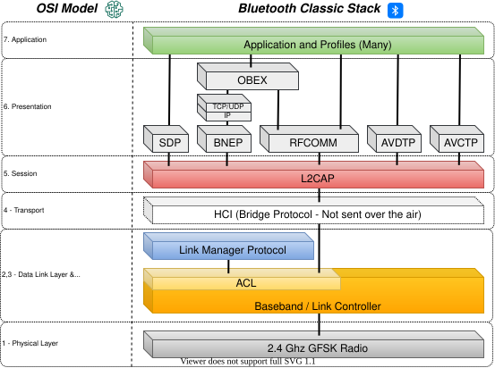
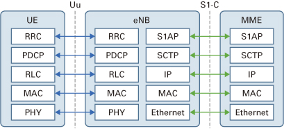
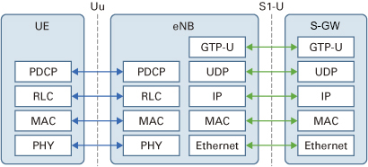

# ✉️ Protocol Stacks
WDissector is built upon well known protocols stack implementation. These are used to generate messages and to guide the target device towards a set of protocol procedures which are expected to be tested again unknown or insecure behaviour.
# Bluetooth Classic
# Implementation:
- Layer 1-2:
- Baseband & LMP - ESP32 Bluetooth Library (opens new window) (Reverse Engineered)
- Layer 2-7:
- L2CAP and profiles - BlueKitchen (opens new window) (Open Source)

# 4G / LTE
# Implementation:
Layer 1-2:
- eNB (Base-station) - Open Air Interface (opens new window) (Open Source)
Layer 3 -7:
- Core Network - Open5GS (opens new window) (Open Source)
# Control Plane

# User Plane
